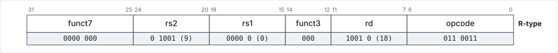
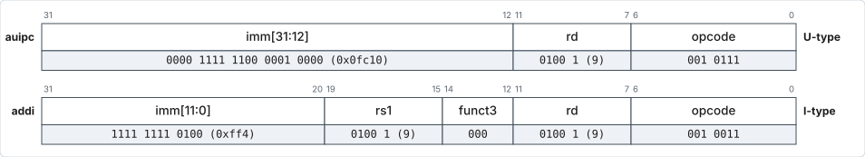

Data Processing Instructions
Instruction table
| Inst | Name | FMT | Opcode | funct3 | funct7 | Description (C) | Syntax |
|---|---|---|---|---|---|---|---|
add |
ADD | R | 0110011 |
0x0 |
0x00 |
rd = rs1 + rs2 |
op rd, rs1, rs2 |
sub |
SUB | R | 0110011 |
0x0 |
0x20 |
rd = rs1 - rs2 |
op rd, rs1, rs2 |
xor |
XOR | R | 0110011 |
0x4 |
0x00 |
rd = rs1 ^ rs2 |
op rd, rs1, rs2 |
or |
OR | R | 0110011 |
0x6 |
0x00 |
rd = rs1 | rs2 |
op rd, rs1, rs2 |
and |
AND | R | 0110011 |
0x7 |
0x00 |
rd = rs1 & rs2 |
op rd, rs1, rs2 |
sll |
Shift Left Logical | R | 0110011 |
0x1 |
0x00 |
rd = rs1 << rs2 |
op rd, rs1, rs2 |
srl |
Shift Right Logical | R | 0110011 |
0x5 |
0x00 |
rd = rs1 >> rs2 |
op rd, rs1, rs2 |
sra |
Shift Right Arith | R | 0110011 |
0x5 |
0x20 |
rd = rs1 >> rs2 |
op rd, rs1, rs2 |
slt |
Set Less Than | R | 0110011 |
0x2 |
0x00 |
rd = (rs1 < rs2)?1:0 |
op rd, rs1, rs2 |
sltu |
Set Less Than (U) | R | 0110011 |
0x3 |
0x00 |
rd = (rs1 < rs2)?1:0 |
op rd, rs1, rs2 |
addi |
ADD Immediate | I | 0010011 |
0x0 |
rd = rs1 + imm |
op rd, rs1, imm |
|
xori |
XOR Immediate | I | 0010011 |
0x4 |
rd = rs1 ^ imm |
op rd, rs1, imm |
|
ori |
OR Immediate | I | 0010011 |
0x6 |
rd = rs1 | imm |
op rd, rs1, imm |
|
andi |
AND Immediate | I | 0010011 |
0x7 |
rd = rs1 & imm |
op rd, rs1, imm |
|
slli |
Shift Left Logical Imm | I | 0010011 |
0x1 |
imm[11:5]=0x00 |
rd = rs1 << imm[4:0] |
op rd, rs1, imm |
srli |
Shift Right Logical Imm | I | 0010011 |
0x5 |
imm[11:5]=0x00 |
rd = rs1 >> imm[4:0] |
op rd, rs1, imm |
srai |
Shift Right Arith Imm | I | 0010011 |
0x5 |
imm[11:5]=0x20 |
rd = rs1 >> imm[4:0] |
op rd, rs1, imm |
slti |
Set Less Than Imm | I | 0010011 |
0x2 |
rd = (rs1 < imm)?1:0 |
op rd, rs1, imm |
|
sltiu |
Set Less Than Imm (U) | I | 0010011 |
0x3 |
rd = (rs1 < imm)?1:0 |
op rd, rs1, imm |
|
lui |
Load Upper Imm | U | 0110111 |
rd = imm << 12 |
lui rd, imm |
||
auipc |
Add Upper Imm to PC | U | 0010111 |
rd = PC + (imm << 12) |
auipc rd, imm |
Table adapted from the RISC-V reference card by James Zhu, with modifications and corrections.
- Differences with ARM: EOR ⇒
xor, ORR ⇒or, LSL ⇒sll, LSR ⇒srl, ASR ⇒sra. - Shifts are real instructions, not variants of MOV unlike ARM. Rotate is not supported in RV32I.
- Shift by an immediate makes use of
imm[10](same bit asfunct7[5], which isInstr[30]) to distinguish between logical and arithmetic right shifts. This is OK since shift needs only 5 bits ofimm.
DP instruction example
- Arithmetic/logical instructions with immediates as the second operand have the
suffix
i(for example,addfor register type,addifor immediate type).- Opcodes for
addandaddiare different too.
- Opcodes for
subcannot take immediates.- This is fine as the immediate is signed — we can simply use the negative
of the value to be subtracted (known at assembly time) as the immediate
for
addi.A-B = A+(-B). - Also,
funct7[5], which is used to distinguish betweenaddandsubfor register type, is not available for immediate type.
- This is fine as the immediate is signed — we can simply use the negative
of the value to be subtracted (known at assembly time) as the immediate
for
| Pseudoinstruction / Assembler Directive | Actual Instruction | Operation | Actual Memory Location Content (Instruction in Hex) |
|---|---|---|---|
mv s2, s1 |
add x18, x0, x9 |
x18 = x0 + x9 ⇒ x18 = x9 |
0x00900933 |

add x18, x0, x9.Note
Most assemblers will implement mv s2, s1 as addi x18, x9, 0, unlike RARS.
Note
sub is still needed as the value of the second operand (B) is variable,
i.e. not known at assembly-time and hence can't be pre-negated.
DP pseudoinstruction — li
la(load address) /li(load immediate) are pseudoinstructions that are not 'load' in the strict sense of the word — no data memory access is involved.- 32-bit constants and absolute addresses (e.g. for MMIO) are generated using
li, which is implemented usingluiandaddi, without data memory access — 20 bits fromluiand 12 bits fromadditogether form the 32 bits. - When
liis used with small (12-bit) constants, it translates toaddialone; similar to MOV. - In contrast, in ARM, 32-bit addresses / constants are loaded from memory using the pseudoinstruction LDR Rx, =CONST_32/ADDRESS_32, which in turn is implemented as a PC-relative LDR and an assembler directive.
| Pseudoinstruction / Assembler Directive | Actual Instruction | Operation | Actual Memory Location Content (Instruction in Hex) |
|---|---|---|---|
li s1, 0x4321dcba |
lui x9, 0x0004321e |
x9 = 0x0004321e << 12 = 0x4321e0001 |
0x4321e4b7 |
addi x9, x9, 0xcba |
x9 = x9 + 0xfffffcba1 = 0x4321dcba |
0xcba48493 |
DP pseudoinstruction — la
- 32-bit PC-relative addresses (
la) are generated usingauipc(facilitating position-independent code) andaddi. 20 bits fromauipcadded to the most significant 20 bits of the PC, and 12 bits fromaddimake it 32-bits.
| Memory Address | Pseudoinstruction / Assembler Directive | Actual Instruction | Operation | Actual Memory Location Content (Instruction in Hex) |
|---|---|---|---|---|
0x00400010 |
la s1, LABEL |
auipc x9, 0xfc10 |
x9 = PC + imm<<12 = 0x00400010 + 0x0fc10000 = 0x10010010 |
0x0fc10497 |
0x00400014 |
addi x9, x9, 0xff4 |
x9 = x9 + MSB-extend(0xff4) ⇒ x9 = x9 + 0xfffffff4 (since imm is negative, i.e. -12)2 = 0x10010004 |
0xff448493 |
|
0x10010004 |
LABEL: .word 0xABCD1234 |
N.A. | N.A. | 0xABCD1234 |

auipc x9, 0xfc10 (U-type) and addi x9, x9, 0xff4 (I-type).Laid out in memory (least significant byte in the lowest memory address — little-endian scheme):
| Memory Address | 0x00400010 |
0x00400011 |
0x00400012 |
0x00400013 |
0x00400014 |
0x00400015 |
0x00400016 |
0x00400017 |
|---|---|---|---|---|---|---|---|---|
| Actual Memory Location Content | 0x97 |
0x04 |
0xc1 |
0x0f |
0x93 |
0x84 |
0x44 |
0xff |
Multiply and divide
Multiply and Divide are not a part of the base instruction set, but are available as an optional standard extension (M).
| Inst | Name | FMT | Opcode | funct3 | funct7 | Description (C) | Syntax |
|---|---|---|---|---|---|---|---|
mul |
MUL | R | 0110011 |
0x0 |
0x01 |
rd = (rs1 * rs2)[31:0] |
op rd, rs1, rs2 |
mulh |
MUL High | R | 0110011 |
0x1 |
0x01 |
rd = (rs1 * rs2)[63:32] |
op rd, rs1, rs2 |
mulhsu |
MUL High (S) (U) | R | 0110011 |
0x2 |
0x01 |
rd = (rs1 * rs2)[63:32] |
op rd, rs1, rs2 |
mulhu |
MUL High (U) | R | 0110011 |
0x3 |
0x01 |
rd = (rs1 * rs2)[63:32] |
op rd, rs1, rs2 |
div |
DIV | R | 0110011 |
0x4 |
0x01 |
rd = rs1 / rs2 |
op rd, rs1, rs2 |
divu |
DIV (U) | R | 0110011 |
0x5 |
0x01 |
rd = rs1 / rs2 |
op rd, rs1, rs2 |
rem |
Remainder | R | 0110011 |
0x6 |
0x01 |
rd = rs1 % rs2 |
op rd, rs1, rs2 |
remu |
Remainder (U) | R | 0110011 |
0x7 |
0x01 |
rd = rs1 % rs2 |
op rd, rs1, rs2 |
Table adapted from the RISC-V reference card by James Zhu, with modifications and corrections.
- There are no instructions like SMULL,
UMULL of ARM which update two registers, as only one
register can be written by an instruction.
- To get a 64-bit result from multiplying two 32-bit numbers, we have to use
mulandmulh/mulhu/mulhsu(depending on the signedness of the multiplicand and multiplier) for the least and most significant 32 bits respectively. - Note that the signedness of the operand does not affect the least significant 32 bits of the multiplication result.
mulhsuis a somewhat unique instruction not found in most other ISAs, allowing for a signed number to be multiplied with an unsigned number — useful for multi-word arithmetic.
- To get a 64-bit result from multiplying two 32-bit numbers, we have to use
-
The
0xfffffprefix to0xcbais the result of MSB-extension.0xfffffis -1, which is why the immediate forluiis0x0004321eto compensate. ↩↩ -
LABEL - PC = 0x10010004 - 0x00400010 = 0x0fc0fff4. Its lower 12 bits,0xff4, are -12 once MSB-extended, so the assembler adds 1 to the upper 20 bits (0x0fc0f+ 1 =0x0fc10) to compensate, as in theliexample above. ↩